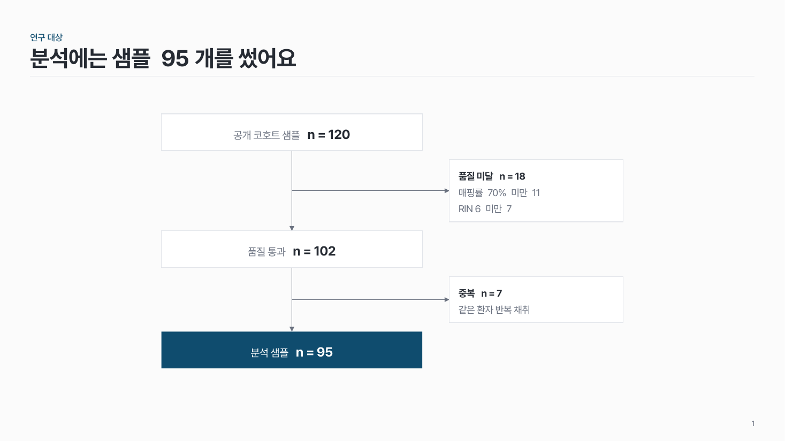
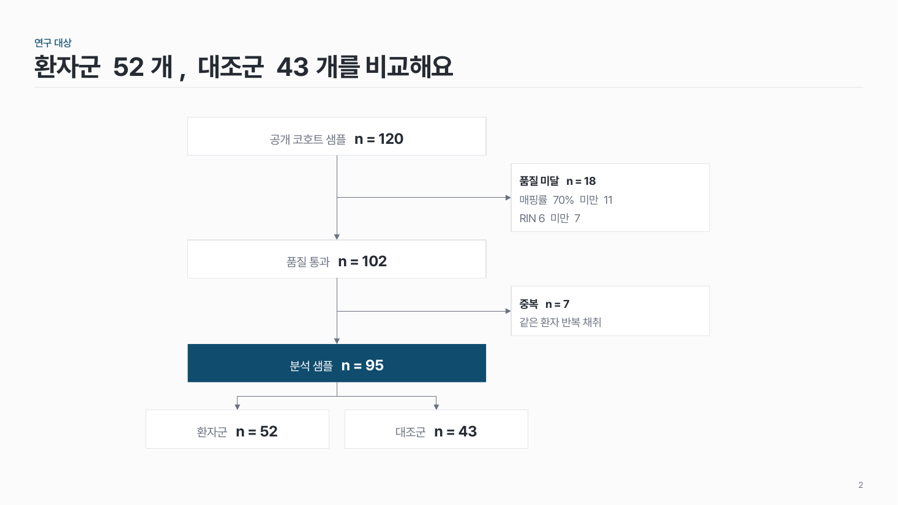

샘플·코호트 흐름 res-02
전체 대상에서 시작해 단계마다 빠진 수와 이유를 옆에 적고, 최종 분석 수까지 세로로 내려와요.

이 시안
3단계 · 단계 사이 제외 이유
슬라이드 제목: 분석에는 샘플 95개를 썼어요
언제 쓰나
대상자나 샘플이 단계마다 줄어드는 과정을 보여 줄 때요. 전체 모집 수에서 최종 분석 수까지, 빠진 이유와 수를 함께 밝혀야 할 때 맞아요.
이럴 땐 다른 패턴
- 빠지는 것 없이 실험 단계만 이어지면 원 + 점선 단계
- 단계마다 도구·입출력이 중요하면 단계별 열 + 알약
구성
- 맨 위에 전체 대상 칸(모집 수 n)을 둬요.
- 세로 중심선을 따라 선정 단계 칸을 아래로 쌓아요.
- 단계 사이 오른쪽에 제외 칸을 붙이고, 이유와 수를 적어요.
- 군이 나뉘면 마지막 단계에서 두 갈래로 나눠요.
- 최종 분석 칸 하나만 진하게 칠해요.
지킬 것
- 세로 단계 칸은 4개 이내.
- 제외 칸은 단계마다 하나, 이유는 3줄 이내.
- 모든 칸에 n을 써요. 단계 n − 제외 n = 다음 단계 n 이 맞는지 꼭 확인해요.
- 주 흐름 칸을 제외 칸보다 넓게 (약 1.5배).
- 화살촉은 단계 사이에만 하나씩.
하지 말 것
- 제외 칸을 주 흐름과 같은 크기·색으로 그리지 않아요.
- 제외 이유를 문장으로 길게 풀지 않아요.
- 단계마다 강조색을 다르게 칠하지 않아요.
팁
논문에서는 이런 그림을 CONSORT 흐름도(임상시험)나 샘플 선별 흐름도라고 불러요. 숫자가 하나라도 안 맞으면 리뷰어가 바로 물어봐요.
시안 비교
같은 내용을 옵션만 바꿔 그렸어요. 그림을 누르면 크게 보여요.
A3단계 · 단계 사이 제외 이유
슬라이드 제목: 분석에는 샘플 95개를 썼어요

B같은 내용 → 마지막에 두 군
슬라이드 제목: 환자군 52개, 대조군 43개를 비교해요